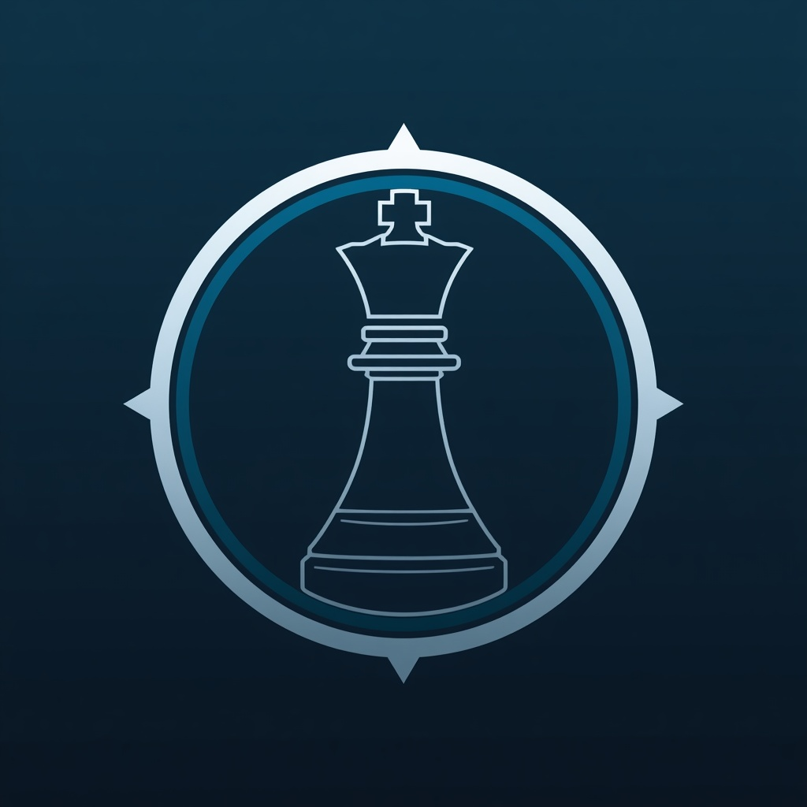

Chess← Sand LabsSAND LABS / STRATEGY
Play the local computer, share a board, or study a position.
Three local computer levels, unrated · Online requires a connected service
Select a piece, then a highlighted square. Arrow keys move board focus; Enter selects.